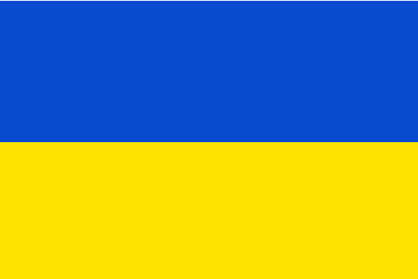
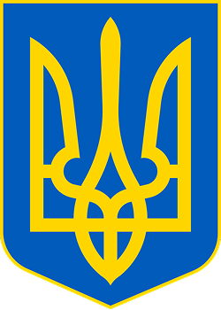

Україна є парламентсько-президентською республікою. Органом законодавчої влади є Верховна Рада України, яка призначає вищий орган виконавчої влади — Кабінет Міністрів України, що очолюється Прем'єр-міністром. Головою держави та Верховним Головнокомандувачем є Президент України.
Більшість громадян України є християнами, переважно православного віросповідання, також на заході України поширений греко-католицизм. Релігіями корінних народів України є також іслам, юдаїзм і караїмізм. До прийняття християнства Руссю в 988 році панівною була язичницька слов'янська релігія.
Україна — промислово-аграрна країна з переважанням продукування сировини. Вона є одним із провідних експортерів деяких різновидів сільськогосподарської продукції. Господарський комплекс країни включає видобування корисних копалин, деякі галузі машинобудування, чорну й кольорову металургію тощо. Україна є потужним виробником електроенергії. Значні позиції займає виробництво військової техніки та зброї.
Протягом початку 1670-х — першої половини 1680-х років назва «Україна» закріпилася в офіційному дискурсі Війська Запорозького, Московського царства, Речі Посполитої та Молдавського князівства як новий політонім. Ним почали позначати державу, яка була під владою гетьманів Війська Запорозького. При цьому дана назва була синонімічною і вживалася для кращого розуміння та виокремлення державного політичного утворення, яке постало на теренах Східної Європи від часів Української революції на чолі з гетьманом Богданом Хмельницьким.
Етимологія слова «Україна» достеменно не відома. Згідно з теорією, якої дотримуються більшість українських дослідників, «Україна» походить від слів «країна» чи «край», тобто «у» означає «рідний», «свій». Таким чином «україна» — антонім слова «чужина». Згідно з іншою теорією, що утворилася під впливом польської та російської історіографії, воно означає «околицю» (рос. окраину) чи «прикордоння».
- Гімн
-
Прапор
 -
Герб

Державні символи України:
=======================Examples of nesting===================================================================================================================
First level list
- first level, first li, must be red
-
Second level list
- first li, must be blue
- lorem2
- lorem3
- lorem4
- lorem5
-
Third level list
- first li, must be #4597f7
- lorem
- lorem
- lorem
- li with span
- lorem
- second level li with span, must be #a0f0fc
- text...green
- text...green
- text...green